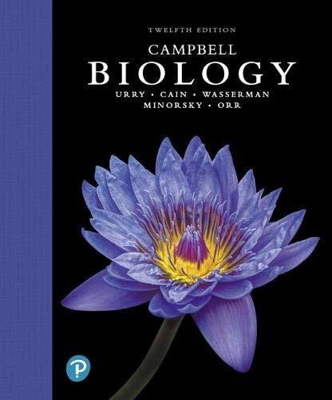

<-- Back to all blogs
Blog Post 1: The One True Campbells (Textbook Review)
One common question we get here at Baology is “How should I get started?” or “What is the first thing I should study” to begin on USABO. What I am about to say is not at all a “secret” or “hot take” but a very honest reflection of conventional Wisdom: Campbell’s Biology.
There is good reason that Campbell’s biology (now first authored by Lisa Urry) is the foundational text for USABO students.
- It has a dedication to biological accuracy. There exist a great many introductory biology textbooks, but few of them are as dedicated to showing things as accurately as Campbell’s biology is. Indeed Minor details like the placement of proteins or very specific details about organism life cycles are accurate even when the main point being illustrated is far more general. It’s this dedication that makes campbells such a smooth transition to more advanced textbooks
- Clever choice of simplification. Every textbook will have to skim over some level of detail (of course except for Alberts… but that’s a story for another day) and it can often be challenging to write a book geared towards beginners but also conveying the important principles that need to be built upon. Campbell’s biology does a great job of this and is for the most part clear and concise. Those who have known me for a while know that I feel like more recent editions trend towards cutting too much, the series as a whole has always set students up beautifully for further studies.
- It’s also the most popular book for USABO. This makes an impact because as an alumni driven competition, the zeitgeist of the contest is also influenced by what people are studying. As a result because of Campbell Biology’s popularity, it also more often than not serves as the foundation for the USABO itself.
- The diagrams. I mentioned this earlier but the diagrams in cambell’s biology are top notch. Joseph and I are both intimately familiar with almost all the diagrams in the textbook and they really embody the sentiment of a picture is worth a thousand words.
For all these reasons this is the best place to start for students in our positions. In future posts we will go over how to approach this book as well as other topics!
Overall Rating:
-
Clarity
5/5
-
Engagement
4/5
-
Usefulness
5/5
-
Overall
5/5
